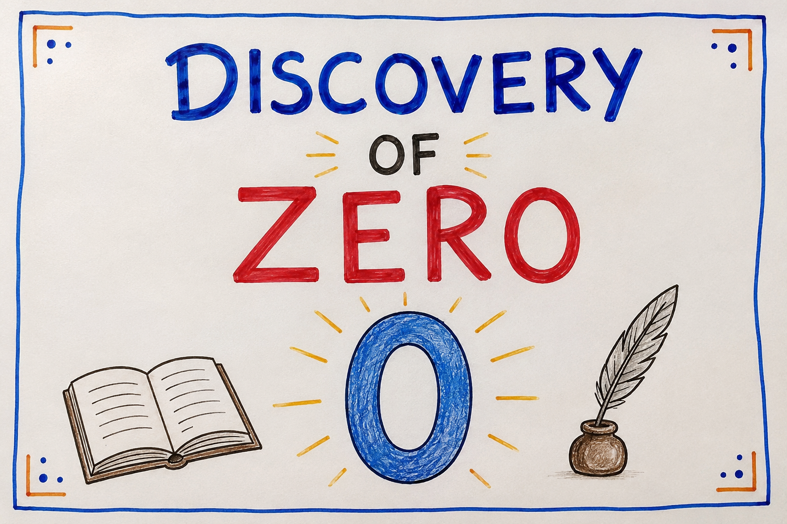

History of Zero and Indian Mathematician
📚 Published by: Saraswat Academy

An in-depth educational article on one of India's greatest gifts to world civilization—the invention and development of zero and the remarkable achievements of Indian mathematicians.
Introduction
Zero is among the most influential discoveries in human history. Modern science, engineering, economics, computing, artificial intelligence, astronomy, and space exploration all rely on the concept of zero and the positional decimal number system. While many ancient civilizations developed sophisticated mathematics, India made the revolutionary contribution of treating zero both as a placeholder and as a number with arithmetic rules.
What is Zero?
Zero represents the absence of quantity, but mathematically it is much more than "nothing." It separates positive and negative numbers, acts as the additive identity, and forms the foundation of modern algebra and computer science.
Numbers Before Zero
| Civilization | Number System | Used Zero? |
|---|---|---|
| Egypt | Hieroglyphic | No |
| Roman Empire | Roman Numerals | No |
| Babylonia | Base-60 | Placeholder only |
| Maya | Base-20 | Yes (independent symbol) |
| Ancient India | Decimal Positional System | Yes (placeholder and number) |
The Indian Origin of Zero
Ancient Indian scholars gradually developed the decimal place-value system. Evidence appears in inscriptions, manuscripts, and mathematical texts. The Bakhshali Manuscript contains an early dot symbol used as a placeholder. Later mathematicians formalized zero into arithmetic.
Brahmagupta: The First Complete Rules of Zero
In 628 CE, Brahmagupta wrote Brahmasphutasiddhanta, describing arithmetic involving zero. He explained:
- a + 0 = a
- a − 0 = a
- a × 0 = 0
- He discussed division involving zero, although modern mathematics later refined those rules.
The formal mathematical treatment of zero by Brahmagupta represents one of the greatest milestones in the history of mathematics.
Major Indian Mathematicians
| Mathematician | Period | Major Contributions | Wikipedia |
|---|---|---|---|
| Aryabhata | 476–550 CE | Place value system, astronomy, trigonometry, value of π | Aryabhata |
| Brahmagupta | 598–668 CE | Arithmetic rules for zero and negative numbers | Brahmagupta |
| Bhaskara I | 600–680 CE | Sine approximation, astronomy | Bhaskara I |
| Mahavira | 9th Century | Algebra and arithmetic | Mahavira |
| Bhaskara II | 1114–1185 | Lilavati, Bijaganita, calculus-like ideas | Bhaskara II |
| Madhava of Sangamagrama | 1340–1425 | Infinite series, Kerala School | Madhava |
| Nilakantha Somayaji | 1444–1544 | Planetary models, astronomy | Nilakantha |
| Srinivasa Ramanujan | 1887–1920 | Number theory, infinite series | Ramanujan |
Timeline
| Year | Event |
|---|---|
| 3rd century BCE | Early Indian numeral development |
| 3rd–7th century | Bakhshali Manuscript traditions |
| 476 CE | Aryabhata born |
| 628 CE | Brahmagupta publishes rules of zero |
| 1114 CE | Birth of Bhaskara II |
| 14th century | Kerala School begins advanced mathematics |
| 1887 | Birth of Srinivasa Ramanujan |
How Zero Reached the World
Indian mathematical knowledge spread through trade, scholarship, and translations into Arabic. Scholars in the Islamic Golden Age adopted Indian numerals, which later entered Europe. Today the Hindu-Arabic numeral system is the global standard.
Importance in Computer Science
- Binary numbers use only 0 and 1.
- Programming languages depend on binary representation.
- Digital electronics, AI, networking, and cryptography all rely on zero.
Interesting Facts
- Zero is neither positive nor negative.
- Division by zero is undefined in modern arithmetic.
- The decimal positional system dramatically simplified calculations.
- Without zero, modern computers would not exist in their current form.
Frequently Asked Questions
Who invented zero?
The concept evolved over time, but Indian mathematicians—especially Brahmagupta—gave zero its mathematical identity through formal arithmetic rules.
Did Aryabhata invent zero?
Aryabhata helped develop the positional number system but did not explicitly define arithmetic rules for zero as Brahmagupta later did.
Why is zero important?
Zero enables place-value notation, algebra, calculus, modern computing, accounting, engineering, and scientific calculations.
Conclusion
The history of zero is one of humanity's greatest intellectual achievements. India's contributions transformed mathematics forever. From Aryabhata's positional ideas to Brahmagupta's arithmetic rules, Bhaskara II's advanced mathematics, the Kerala School's infinite series, and Ramanujan's extraordinary discoveries, Indian mathematicians have profoundly shaped global science.